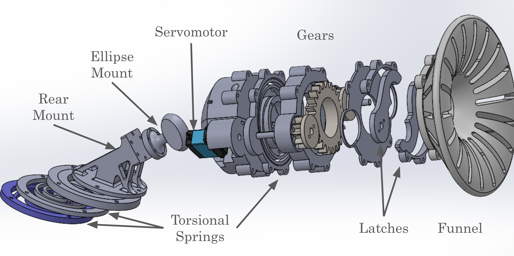
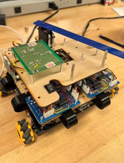
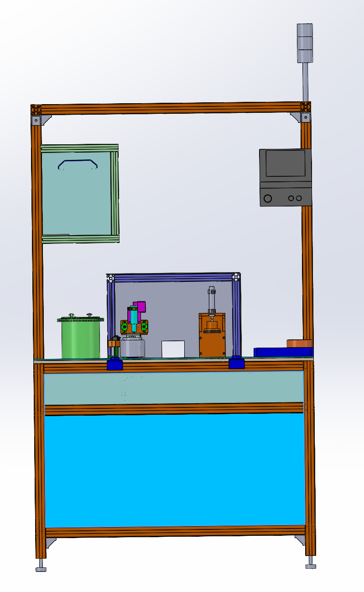
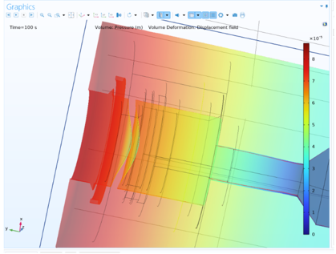
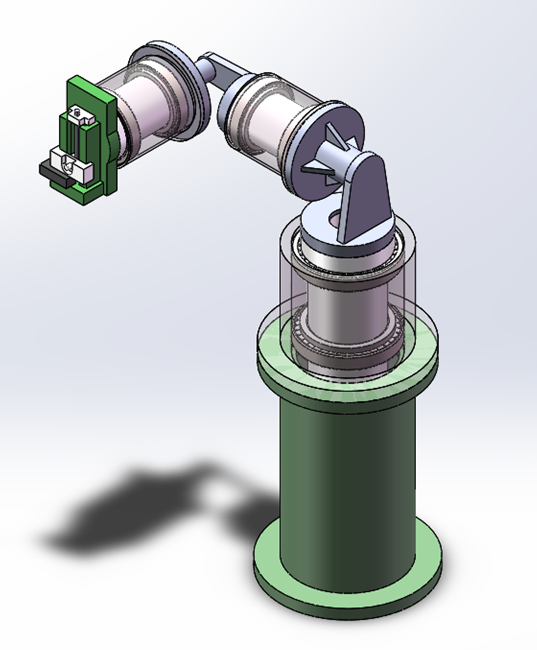
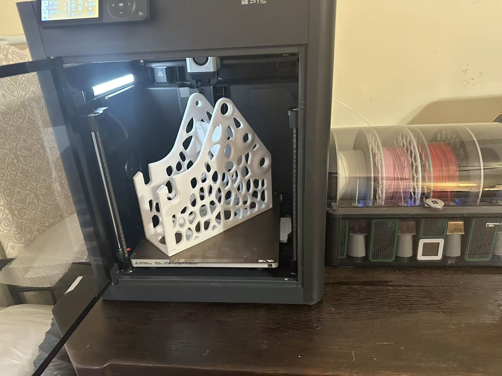
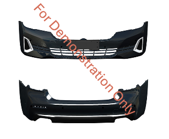

2025
Lunar Rover & Docking System — Structural Design
Developed the aluminum chassis and turret mechanism of a lunar rover prototype. Focused on load-bearing structure, assembly fit, and turret locking design. Verified stability and durability under multi-robot docking tests.

View project ↗
2024
Arena Battle Robot — Mechanical & Mechatronic Design
Designed the robot chassis and armor structure in SolidWorks, integrating sensors, actuators, and control boards on ESP32 (C++) with custom wiring and perf-board soldering.

View project ↗
2023
Automated Adhesive Workstation — Process & Mechanical Design
Developed an automated adhesive workstation integrating dispensing, pressing, and alignment functions; focused on design and DFM for stable coating quality and reduced manual labor.

View project ↗
2023–2024
Optical Pressure Transducer — High-T/High-P Structural Reliability
COMSOL multi-physics analyses (thermal + structural) for 350 °C / 10,000 PSI conditions. Improved fatigue life by ~20% via fillet transitions and membrane support; documented test procedure and calibration results (±2% accuracy).

View project ↗
2022
Intelligent Lathe Tool Grinder — Mechanical Structure Design
Concept study for an automated grinder: three-axis tool orientation, XY feed with Z lift, and safety brake. Focus on mechanism layout, stiffness, and serviceability.

View project ↗
2022–Now
Micro-Factory: Small-Batch Prototyping — Inventory & QC
Built an on-demand pipeline: digital catalog, print parameter, material decision matrix (PLA/ABS/PETG/PA), and DFM. Reduced turnaround time by ~30% while maintaining dimensional repeatability.

2021
Strain Mapping — FEA · Photoelasticity · Gauges
Analyzed an aircraft stringer with ANSYS FEA, photoelastic fringe patterns, and bonded strain gauges; correlated stress fields and quantified method-to-method error.

View project ↗
2021
Automotive Exterior System — OEM-Standard Design (Text-Only)
Developed bumper structural components based on OEM Class-A surface data.
Applied CATIA V5 for 3D modeling. Collaborated with CAE and tooling teams to ensure stiffness, fit, and mold feasibility under OEM standards.

2021
Jumping Rescue Robot — Spring Mechanism Design
Designed and simulated a spring-actuated jumping robot, integrating mechanical linkage modeling and MATLAB motion analysis.

View project ↗